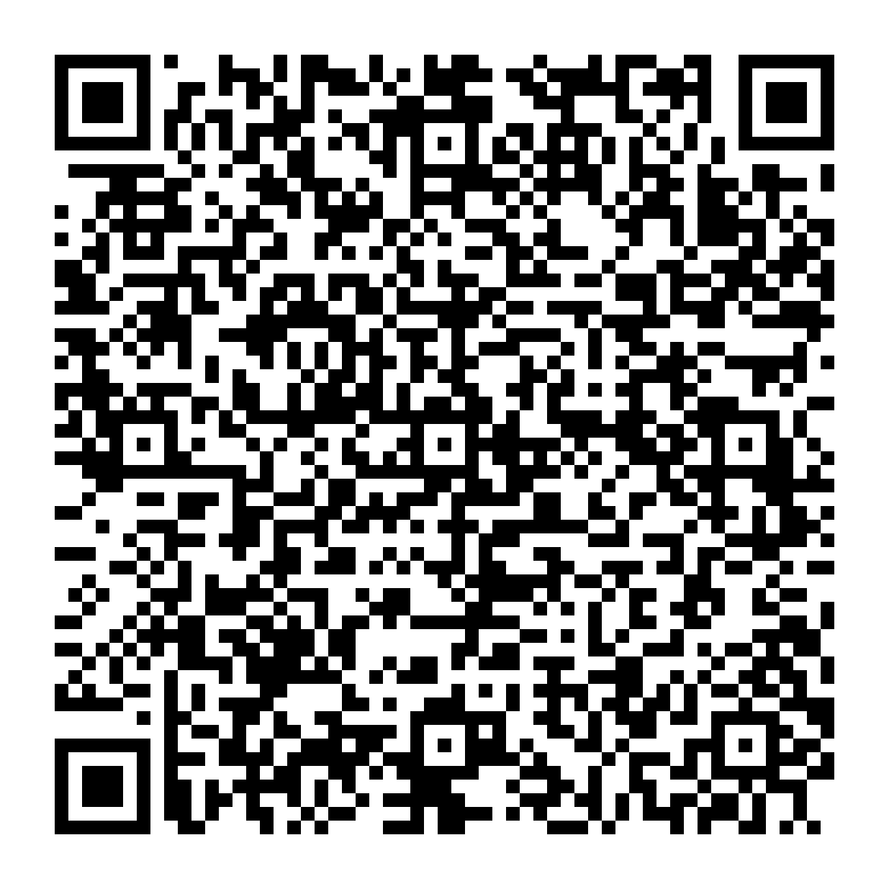

💡 Por que doar?
O projeto Echo Engine nasceu da vontade de tornar o mundo mais inclusivo. Cada doação ajuda a:
- 💻 Desenvolver novos protótipos com sensores e microcontroladores
- 🧪 Testar os dispositivos em ambientes reais
- 📦 Criar kits educativos para escolas e ONGs
- 🌐 Manter a infraestrutura digital do projeto
- 📚 Produzir tutoriais e materiais de capacitação
📲 Como doar via Pix
Chave Pix: echo.engine.konvex@gmail.com
🎁 Solicitação de Aparelho Gratuito
Se você tem um parente com autismo, pode solicitar um aparelho gratuito (Básico, Neural ou Portátil) para uso pessoal ou para uma escola. Preencha o formulário abaixo com os dados solicitados.
🔍 Transparência
Todo valor arrecadado será investido diretamente no desenvolvimento e distribuição dos dispositivos. Relatórios de progresso estarão disponíveis para quem quiser acompanhar.
🤝 Junte-se a nós
Se você acredita que a tecnologia pode transformar vidas, considere apoiar este projeto. Cada contribuição — pequena ou grande — faz uma enorme diferença.